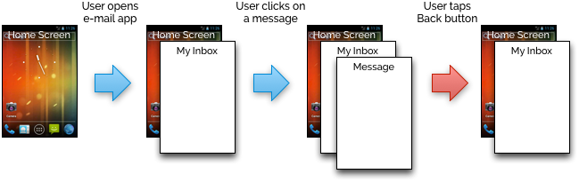

Creating apps with multiple screens and communicating information between them can be difficult on Android, but Sofia makes the process much easier.
All of the examples that we've seen so far have been of apps that only had a single screen. For some small utilities this might be enough, but generally if we want to design apps that accomplish something more interesting, we need to break it up into multiple screens that serve different purposes.
For example, an e-mail app would have several different screens depending on the actions that the user would want to perform:
It would be inappropriate from a software design and a GUI design point of view to lump all of this functionality into a single screen class. What we need is a way to create multiple screens, navigate between them, and pass information between them as well.

Navigation in Android apps is based on a stack (called a back stack in the official Android documentation). Imagine that the home screen is always at the bottom of the stack. When you open an app from your launcher, one of its screens gets pushed onto the stack. You, the user, always see the screen that is currently at the top of the stack. If you click a button on that screen that opens another screen, then the new one is pushed onto the stack as well.
To leave a screen and go back to the previous one, you click the Back button on your device. This pops the navigation stack, destroys the current screen, and returns you to the one just before it. You can continue to go back in this way until you reach the home screen again.
Recall that Android applications are composed of one or more activities, each of which represents a single screen in the application. Also recall that Sofia provides the sofia.app.Screen class that
Sofia contains a hierarchy of shape classes that use of polymorphism and method overriding to provide several types of shapes that have a common base class. All shapes in Sofia extend the abstract sofia.graphics.Shape class, which maintains properties that all shapes have in common—their size and position, color, and rotation.
The table below lists all of the concrete types of shapes that you can create and use in your own apps:
| Class | Purpose |
|---|---|
sofia.graphics.RectangleShape |
Displays a rectangle (or square, if the width and height are the same). This shape can be drawn as a hollow outline or a filled solid. |
sofia.graphics.OvalShape |
Displays an oval (or circle, if the width and height are the same). This shape can be drawn as a hollow outline or a filled solid. |
sofia.graphics.LineShape |
Displays a line between two points. |
sofia.graphics.ImageShape |
Displays an image from your application resources folder or from a file in the device's storage. |
sofia.graphics.TextShape |
A shape that renders a text string. You can use this shape class to create text displays among other graphics in your app, such as a scoreboard in a game. |
The various shape classes have a number of constructors that make it easy to create these shapes with different positions, sizes, and other required visual properties. Each type of shape is summarized below.
| Constructor | Effect |
|---|---|
sofia.graphics.RectangleShape#RectangleShape(float, float, float, float) |
Creates a rectangle from four coordinates, in the following order: the x-coordinate of the left side, the y-coordinate of the top, the x-coordinate of the right side, and the y-coordinate of the bottom. |
sofia.graphics.RectangleShape#RectangleShape(RectF) |
Creates a rectangle from a android.graphics.RectF object, which is an object that encapsulates the left, top, right, and bottom coordinates of a rectangle. |
| Constructor | Effect |
|---|---|
sofia.graphics.OvalShape#OvalShape(float, float, float, float) |
Creates an oval from four coordinates, in the following order: the x-coordinate of the center of the oval, the y-coordinate of the center of the oval, the horizontal radius, and the vertical radius. |
sofia.graphics.OvalShape#OvalShape(float, float, float) |
Creates a circular oval from three coordinates, in the following order: the x-coordinate of the center of the oval, the y-coordinate of the center of the oval, and the radius. |
sofia.graphics.OvalShape#OvalShape(RectF) |
Creates an oval from a android.graphics.RectF object, which is an object that encapsulates the left, top, right, and bottom coordinates of a rectangle. The oval that is created is the largest oval that would fit inside that rectangle (in other words, the width of the rectangle is its horizontal diameter and the height of the rectangle is its vertical diameter). |
| Constructor | Effect |
|---|---|
sofia.graphics.LineShape#LineShape(float, float, float, float) |
Creates a line from four coordinates, in the following order: the x-coordinate of the first endpoint, the y-coordinate of the first endpoint, the x-coordinate of the second endpoint, and the y-coordinate of the second endpoint. |
sofia.graphics.LineShape#LineShape(RectF) |
Creates a line from a android.graphics.RectF object, which is an object that encapsulates the left, top, right, and bottom coordinates of a rectangle. The endpoints of the line are (left, top) and (right, bottom). |
The sofia.graphics.ImageShape class lets you display images from your app's resources on the screen.
Images are stored in one of the res/drawable-* folders in your Eclipse project. In the constructors below, you refer to the image using its filename without an extension. For example, if you have images named res/drawable-*/dragon.png in your project (where the * refers to any of the resolution identifiers like hdpi, mdpi, and so on), then you would pass in simply "dragon" and the image that most closely matches your device's screen resolution would be used.
When you create an ImageShape, you also provide the area on the screen that you want the image to occupy. The image will be stretched or shrunk in order to make it fit inside that area.
Images can also be shaded with a color by using the sofia.graphics.Shape#setColor(Color) method.
| Constructor | Effect |
|---|---|
sofia.graphics.ImageShape#ImageShape(String, float, float, float, float) |
Creates a new shape that will draw the image with the name specified by the String parameter. The image will be stretched or shrunk to fit in the area specified by the four float parameters. |
sofia.graphics.ImageShape#ImageShape(String, RectF) |
Creates a new shape that will draw the image with the name specified by the String parameter. The image will be stretched or shrunk to fit in the area specified by the RectF parameter. |
The sofia.graphics.TextShape class lets you display a text string on your screen. These can be used, for example, to incorporate information in a game like player's health or their current score.
| Constructor | Effect |
|---|---|
sofia.graphics.TextShape#TextShape(String, float, float) |
Creates a new shape that will draw the text specified by the String parameter. The text will be anchored so that the top-left corner of the box containing the text is at the x- and y-coordinates indicated by the two float parameters. |
Even though they're objects, you should think of the shape classes provided by Sofia as primitive graphical constructs and not part of a richer data model. Imagine that you're writing an Angry Birds knock-off, and you need shapes to represent the piggies and the birds. Those would be drawn on the screen using ImageShape objects, but it would be bad design to have your program logic manipulate ImageShape objects directly.
Instead, you can extend the built-in shapes to make them specific to your app and customize them by adding your own logic. For example, you could create your own Piggy class:
public class Piggy extends ImageShape
{
public Piggy(float left, float top, float right, float bottom)
{
super("piggy", left, top, right, bottom);
}
}
Even though Piggy extends ImageShape, notice that we have given it a constructor that only takes the bounds of the shape and not the image that it should use. This is because we want all instances of Piggy to use the same fixed image (in this case, the "piggy" drawable resource). We achieve this by calling the super constructor and passing it the additional parameter.
Now that we have a custom class to represent piggies in our game, we can add additional piggy-specific behavior to the class. For example, when a piggy gets hit, maybe its health drops and it changes its appearance. Here's an example:
public class Piggy extends ImageShape
{
// How much health the piggy has left.
private int health;
public Piggy(float left, float top, float right, float bottom)
{
super("piggy", left, top, right, bottom);
// Let a piggy get hit twice before dying.
health = 2;
}
public void gotHit()
{
health--;
if (health == 1)
{
// Make the piggy appear beaten up.
setImage("piggy_weak");
}
else
{
// Remove the piggy from the screen, "killing" it.
remove();
}
}
}
Sofia provides a sofia.graphics.Color class that allows you to create objects that represent colors for shapes and other purposes.
On computer displays, colors are formed by mixing the three primary color components—red, green, and blue (collectively known as RGB). Each of these components is represented by an integer between 0 and 255, where 0 means that the component is absent from the color and 255 means the component is contributing maximally to the color. So for example, a color with a red component of 255 and green and blue components of 0 would represent the brightest shade of red that your display can produce. If you changed red to be 128, then it would be a shade of red with 50% brightness.
The figure to the right shows the colors that could be created by mixing different combinations of the primary colors at full strength. For example, red and green combine to form yellow. The absence of all three color components produces black, and the full presence of every color component produces white. When each of the RGB values is the same, shades of gray are produced.
In addition to the red, green, and blue components, colors also contain an alpha component that describes how transparent the color is when it is drawn on the screen. Like the other three components, alpha is an integer value between 0 and 255, where 0 means that the color is completely transparent (invisible) and 255 means that the color is completely opaque (nothing behind it would show through). By using alpha in your drawings, you can create some interesting blending effects.
To make as easy as possible to use colors right out of the box, Sofia's Color class provides 140 pre-defined colors—the same set that is defined in CSS for web development. Hover over the color swatches to the right to see the name of the constant in the Color class that will produce that color.
For those situations where none of these 140 colors is sufficient, the Color class provides a number of static factory methods that you can use to create new ones:
| Method | Effect |
|---|---|
sofia.graphics.Color#gray(int) |
Returns a shade of gray. The gray level passed into this method must be between 0 and 255, where 0 is black and 255 is white. |
sofia.graphics.Color#gray(int, int) |
Returns a shade of gray. The first parameter is the gray level; the second parameter is the alpha component. |
sofia.graphics.Color#rgb(int, int, int) |
Returns a color from its red, green, and blue components. |
sofia.graphics.Color#rgb(int, int, int, int) |
Returns a color from its red, green, blue, and alpha components. |
sofia.graphics.Color#hsv(float, float, float) |
Returns a color from its hue, saturation, and value components. Hue is a value between 0 and 360; saturation and value are between 0 and 1. More information about HSV color representation can be found in this Wikipedia article. |
sofia.graphics.Color#hsv(float, float, float, int) |
Returns a color from its hue, saturation, value, and alpha components. |
sofia.graphics.Color#getRandomColor() |
Returns a color with random red, green, and blue components. The alpha of the color returned will always be 255. |
Objects that represent colors are a Sofia feature not found in Android. The traditional Android API represents colors simply as integers that combine the red, green, blue, and alpha components into a single number. Android does contain a android.graphics.Color class, but you cannot create objects from it. Instead, it only provides static methods to manipulate color integers.
If you want to use Sofia Color objects with traditional Android APIs that expect colors to be represented as integers, you can call the sofia.graphics.Color#toRawColor() method to return the integer representation of a Color object. Likewise, the sofia.graphics.Color#fromRawColor(int) method will create a Color object from a color integer.
Now that we've talked about the shapes themselves, let's take a moment to discuss where they go once you create them. Recall that the sofia.app.Screen class acts as the controller for GUI-driven applications that use a layout defined in your app's resources.
What if—instead of a GUI filled with buttons and other widgets—you just wanted to create a full-screen drawing canvas where shapes could be drawn, manipulated, and animated?
Sofia provides a sofia.app.ShapeScreen class that does exactly this. If you extend ShapeScreen, then that screen in your app will automatically have a full-sized shape canvas where you can add your shapes.
As before, you should implement the initialize() method in your screen class to prepare what it should look like before it is displayed to the user. Consider the following example:
import sofia.app.*;
import sofia.graphics.*;
public class MyScreen extends ShapeScreen
{
public void initialize()
{
RectangleShape box = new RectangleShape(0, 0, 50, 50);
box.setFilled(true);
box.setColor(Color.red);
add(box);
}
}
In the first three lines of the method, we created a rectangular shape positioned at (0, 0), the top-left corner of the screen, with a width and height of 50 pixels (so it is square), and made it filled with the color red. Creating the shape is not enough to display it on the screen, however. It must be added to the screen; this allows you to create shapes earlier in the program and only add them to the screen when they need to be shown, if you wish.
The sofia.app.ShapeScreen#add(Shape) method on the last line is inherited from ShapeScreen and adds the shape to the screen, which refreshes the screen so that the shape is now made visible. In addition to this method, the following other methods let you manipulate shapes on the screen:
sofia.graphics.ShapeScreen#add(Shape) |
Adds a shape to the screen. |
sofia.graphics.ShapeScreen#remove(Shape) |
Removes the specified shape from the screen, causing it to no longer be drawn. |
sofia.graphics.ShapeScreen#clear() |
Removes every shape from the screen. When it is redrawn, it will appear blank. |
Very frequently, you'll add shapes to the screen that overlap with other shapes that are already there. Shapes are drawn in the order that they are added, which means that shapes that you add later will obscure shapes that were added earlier if they overlap.
It is possible to override this behavior by modifying the z-index of a shape. You can think of the z-index as a value along an imaginary third axis that projects out of the screen toward the user. By default, all shapes have a z-index of zero. To change this value for a shape, call its sofia.graphics.Shape#setZIndex(int) method and pass it any negative or positive integer value. Shapes with higher z-indexes will always be drawn on top of shapes with lower z-indexes, regardless of the actual order that they were added to the canvas.
There is a wide variety of Android devices on the market, both smartphones and tablets, and these devices come in many different screen sizes and resolutions. Because of this, you should never write code that assumes that the screen has a particular width or height.
Instead, you should write code that adjusts to the screen size dynamically. The ShapeScreen class has two methods that let you ask what the size of the screen is: sofia.app.ShapeScreen#getWidth() returns the width of the screen in pixels, and sofia.app.ShapeScreen#getHeight() returns its height. You can use these values to do things like anchor a shape to the right or bottom of the screen, or to create a row or column of equal sizes shapes that span the width or height of the screen.
For some kinds of apps, you may not want the shape canvas to take up the entire screen, but instead combine it with other widgets or views so that you can still make use of standard buttons and text fields.
For performance reasons, it is highly discouraged that you try to include Android widgets directly on the shape canvas itself. Instead, you can partition your screen space so that a shape canvas occupies part of your GUI layout alongside those other widgets.
The easiest way to do this is still to have your screen class extend ShapeScreen, but then to also provide a GUI layout XML file for the screen, either by giving it the right filename or using the @ScreenLayout annotation.
In this layout, you need to let Sofia know where the shape canvas should go. This canvas is actually represented by the sofia.graphics.ShapeView class. This view is located in the Custom and Library Views section of the GUI palette and you can drag one of these onto your layout as you would any other widget.
Just placing the view on your layout isn't enough, however. Methods like add() from the ShapeScreen must still know which view actually represents the ShapeView that shapes should be added to. To make this connection, give the view an ID of shapeView, spelled exactly this way (lowercase s, uppercase V). Once this is done, the screen will find the correct view to place shapes on.
ShapeScreen can only manipulate one ShapeView at a time. You can have as many ShapeView objects as you want on a single screen, but only one can be manipulated using the screen's add()/remove()/clear() methods. However, the ShapeView class itself also provides these methods, so that you can manipulate other views directly if you need to.
We've already seen some examples of handling user input for the built-in Android widgets in Chapter 2. For example, when the user touches a button, your Screen receives a notification that it was clicked.
For buttons and other standard widgets, however, this is all the information you receive. That is, you only find out that the button was clicked, not where on the button was clicked. That's fine, though—for regular buttons, it doesn't matter whether the user tapped the left side or the right side, as long as she tapped somewhere on it.
If you're doing something more advanced though, like manipulating graphics on a canvas, detailed touch input data becomes more important. You probably want to know what location on the screen was tapped, what shapes were there, let the user drag shapes around, or any number of other possibilities.
Touch input notifications come in three phases:
The fact that you receive many movement notifications is important because it allows your app to track that movement live and respond immediately. Even the slighest movement might generate a handful of events.
So how does your app handle these? If you've extended ShapeScreen, then you can implement any or all of the following three methods, depending on what kind of notifications you need to handle:
| Event Method | Purpose |
|---|---|
onTouchDown(MotionEvent event) |
Called once when the user first touches her finger down on the shape canvas. |
onTouchMove(MotionEvent event) |
Called many times as the user drags her finger around the shape canvas as it is held down against the screen. |
onTouchUp(MotionEvent event) |
Called once when the user finally lifts her finger up off the shape canvas. |
Each of these three methods takes a parameter that is an android.view.MotionEvent object, which provides detailed information about the event. For most situations, the main two methods you'll be calling on this object are android.view.MotionEvent#getX() and android.view.MotionEvent#getY(), which return the pixel location where the event occurred (where the finger touched the screen or where it was dragged to).
For some apps, you might only interested in the pixel location where the user touched the screen. For example, and app that lets you draw shapes would want to use that precise location to position and size the shape when the user touches and drags. In these cases, the coordinates retrieved from the MotionEvent object provide all the information you need.
For other apps, however, existing shapes on the screen might represent touchable objects that the app should react to in different ways when the user comes in contact with them. In this case, the pixel location of the touch event is only a tool to answer the real question you're interested in: Which shape was touched?
There are two main ways of getting an answer to this question, and it depends on which of the following ways is more appropriate to ask it. The first is a simple yes/no question, and the second is a search query:
Shape, "Do you occupy a particular location on the canvas?"ShapeScreen (or the ShapeView), "Give me the shape—or shapes—that occupy a particular location on the canvas."
The first option is the simpler of the two and is useful if you already have a specific shape of interest and want to know if the user has touched it. To do this, you call the sofia.graphics.Shape#contains(float, float) method on the Shape object and pass it the x- and y-coordinates of the location you're interested in. This method returns a boolean value: true if the point is inside the shape or false if it is not.
The second option is more useful if you have a large number of shapes on the screen and want to quickly filter the ones that the user came in contact with. ShapeScreen and ShapeView provide the following methods:
| Method | Purpose |
|---|---|
sofia.graphics.ShapeScreen#getShapeAt(float, float) |
Returns the Shape that is located at the specified x- and y-coordinates on the screen. If multiple shapes overlap at that point, the, Class frontmost one is returned. If there is no shape at that point, this method returns null. |
sofia.graphics.ShapeScreen#getShapeAt(float, float, Class) |
Returns the Shape that is located at the specified x- and y-coordinates on the screen, searching only among shapes of a particular class (and subclasses). If multiple shapes overlap at that point, the frontmost one is returned. If there is no shape at that point, this method returns null. |
sofia.graphics.ShapeScreen#getShapesAt(float, float) |
Returns the Set of Shape objects that are located at the specified x- and y-coordinates on the screen. If there are no shapes at that point, an empty set will be returned. |
sofia.graphics.ShapeScreen#getShapesAt(float, float, Class) |
Returns the Set of Shape objects that are located at the specified x- and y-coordinates on the screen, searching only among shapes of a particular class (and subclasses). If there is no shape at that point, an empty set will be returned. |
In any discussion of drawing custom graphics, the question of how those graphics can be animated often comes up. Animation in the context of traditional computer graphics can be quite difficult, involving a number of advanced topics such as timers to control the frame rate, multiple threads of execution to compute those frames in the background, and synchronization to ensure that those multiple threads share a consistent view of the state of the application.
These concepts pose a great number of issues for even experienced programmers—let alone novices—and this makes developing apps with interesting animations a significant burden.
In order to address this, Sofia provides some basic but powerful animation capabilities that eliminate this burden. The API is designed in a similar fashion to animation support provided by modern web development frameworks like jQuery and Dojo.
Animations in Sofia are based on simple interpolation. This means that you only have to be concerned with the two endpoints of the animation: the starting state, which is defined as the current state of the shape (color, position, and so forth) when the animation begins, and the desired state when the animation ends. By using these two states, Sofia smoothly interpolates what the state of the shape should be at every frame of the animation.
Consider the example to the right. When the animation begins, the oval is filled red and positioned at the top-left corner of the view. Imagine that, in the span of one second (1000 milliseconds), you want the shape to move toward the bottom-right corner and fade to black at the same time. The right-hand side of the figure shows what five frames of the animation would look like if they were all laid on top of each other.
To demonstrate how easy animations are in Sofia, the above example could be achieved in just one line of code:
oval.animate(1000).position(endX, endY).color(Color.black).play();
In other words, all you have to do is tell Sofia how long you want the animation to run and what you want the shape to look like when it's over. The rest is taken care of for you!
Animations in Sofia consist of three parts:
sofia.graphics.Shape#animate(long) method, followed bysofia.graphics.Shape.Animator#play() method to actually set the animation in motion.
Let's dissect the animation above. Assume that we have an OvalShape object named oval that is positioned at the top-left corner of the screen and filled with Color.red. Every shape offers an sofia.graphics.Shape#animate(long) method that lets you define an interpolation-based animation. It takes a single parameter that indicates how long the animation should run, in milliseconds. (Using milliseconds instead of seconds gives you finer precision without worrying about rounding errors.)
So, in the previous example, we are saying that we want to animate our oval for 1000 milliseconds, or one second. After this, we list the properties that we want to have changed during the animation—specifically, we say what we want them to look like when it's over. In this example, we want the position of the object to change to the coordinates (endX, endY), which we will assume to be variables defined elsewhere. So, we call the sofia.graphics.Shape.Animator#position(float, float) method. We also want the color of the object to fade to black, so we call sofia.graphics.Shape.Animator#color(Color).
All this work only configures the animation—it does not start it running. To do this, we must end our animation chain with a call to the sofia.graphics.Shape.Animator#play() method. Calling this method starts the animation in the background and returns immediately. In other words, it does not wait for the animation to complete.
If your shape animations include movement, then at some point it's possible that your shapes might collide with each other while they're moving, or they might make contact with the edge of the screen. For games especially, it's important to be notified about such events so that you can execute some game logic in response to them—for example, by destroying one of the shapes that was hit, or reducing a player's health, or performing some other action.
Handling collisions in Sofia only requires writing one method, but there are two places where you can do it:
onCollisionBetween method in your Screen subclass that gets called when two shapes collide, or when a shape collides with the edge of the screen.onCollisionWith method in a custom Shape subclass that gets called when that shape collides with another shape or with the edge of the screen.
The first option is the only option you have if you're using the built-in shapes instead of extending them with classes of your own. In this case, you must write an onCollisionBetween method that takes two parameters: the two shapes involved in the collision.
What types should the parameters be? It depends on how broad or narrow you want your collision notifications to be. The most general option is the following:
public void onCollisionBetween(Shape first, Shape second)
{
// Do something...
}
This method will be called whenever any two shapes collide. But what if you're only interested in collisions between specific kinds of shapes? If your app includes ovals and rectangles flying around the screen but you're only interested in when a rectangle and an oval collide, but not when rectangles or ovals collide with themselves, you can write a method with more specific parameter types:
public void onCollisionBetween(RectangleShape first, OvalShape second)
{
// Do something...
}
Then, this method will only be called when a RectangleShape and an OvalShape collide. (The order of the two parameters does not matter.) Since this is an example of method overloading, it means you can have as many versions of the onCollisionBetween method as you want in your screen class, and only the appropriate one (or ones) will be called depending on the types of objects that collided.
If you extend the built-in shapes to create your own custom subclasses, then you have the more convenient option of adding collision handling logic directly to the shapes themselves. This means that logic and behavior of how that collision should be handled is all neatly organized in your data model.
Think back to the Piggy class in the Angry Birds example from earlier. When a bird and a piggy collide, you want to call the gotHit() method that decreases the piggy's health and changes his appearance. This logic can be written easily using the onCollisionWith method. Since this method is implemented in a shape itself, it assumes that one of the shapes involved in the collision is the object that the method is called on. Then, this method only needs to take one parameter: the other shape involved in the collision.
public class Piggy extends ImageShape
{
// The same fields, constructors, and methods from before...
public void onCollisionWith(Bird bird)
{
gotHit();
}
}
And that's it! Whenever a Bird collides with a Piggy, the method above will be called without any further intervention on your part. As with onCollisionBetween, you can overload onCollisionWith with as many different parameter types as you want in order to handle collisions between the shape class that the method is in and other kinds of shapes.